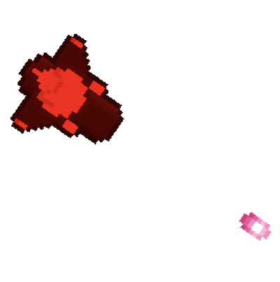

実装機能
|  |
弾丸を発射する機能 「Z」キーを押すと弾が発射され、相手の戦闘機を攻撃することができます。 |

|
戦闘機を操縦する機能 方向キーを押して戦闘機を操縦できます。 |

|
ステミナを管理する機能 弾丸を当てると、ステミナゲージが減少します。 |

|
ログインと会員登録する機能 ゲームにログインでき、まだ会員でない場合は、会員登録できます。 |
背景と目的
最近、スマートフォンゲームの開発にはUnityをたくさん使用しています。 これほどUnityはモバイルゲーム開発者たちに基礎素養になりました。 また、最近のゲームはすべてオンライン化されているのが特徴です。 そのため、ゲーム開発者になるために基礎素養を育てるために、独自のオンラインゲームを制作することになりました。
最近、スマートフォンゲームの開発にはUnityをたくさん使用しています。 これほどUnityはモバイルゲーム開発者たちに基礎素養になりました。 また、最近のゲームはすべてオンライン化されているのが特徴です。 そのため、ゲーム開発者になるために基礎素養を育てるために、独自のオンラインゲームを制作することになりました。
学んだこと
- UnityでCollisionを処理する方法と、CollisionとTriggerの違いを学びました。
- PUN2でサーバーを構築する方法とFirebaseでデータベースを構築する方法を学びました。
進行手順
- retr0さんの「Unityマルチプレイヤーネットワークゲーム一発で作る」講義を聞きながら一つずつフォローしました。
- また、ゴールドメタル様の「2D鐘スクロールシューティング」講義を2講までだけ聞きました。この後、私だけの「オンラインシューティングゲーム」を作ることにしました。
- 最初に講義で知らされたように飛行機を操縦して弾が発射される機能を実装したが、左右ボタンを押したときに飛行機が時計方向または反時計回りに回転するように修正し、弾を当てると体力ゲージが削る機能を追加実装
- PUN2でサーバーを構築し、Firebaseでデータベースを構築しました。ただし、連携後にプログラムを実行すると、弾丸が壁に当たったときに次のエラーメッセージが表示されました。
Failed to 'network-remove' GameObject. - Googleで調べた結果、ネットワーク上でオブジェクト（GameObject）を作成すると、プレーヤーのスペースごとにレプリカを作成し、オブジェクトが移動するとレプリカも同じように移動します。ここで、オブジェクトを削除するときは、オブジェクトを作成したプレイヤーだけを削除できるというルールがあります。これを守らずにランダムな削除処理をしたため、エラーが発生しました。
- オブジェクトを作成したプレイヤー側でオブジェクトを削除するように修正すると、エラーメッセージが消えました。
- このようにして目的のプログラムを実装できました。
能力強化のために最も努力したこと
Photonでゲームサーバーを構築、Firebaseでデータ保存機能を実装し、Unityでオンラインゲームを作成
Photonでゲームサーバーを構築、Firebaseでデータ保存機能を実装し、Unityでオンラインゲームを作成
全体構造

使用技術
Unity, Photon, Firebase
Unity, Photon, Firebase
開発環境
Unity 2020.1.9f1
Unity 2020.1.9f1
追加の説明